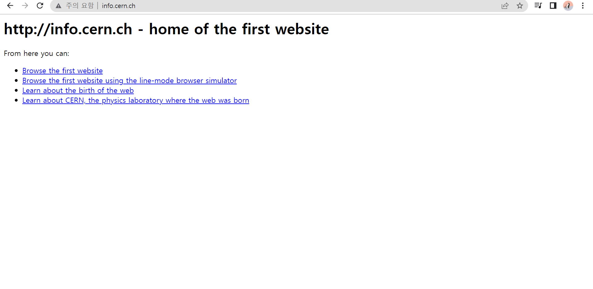

 웹의 메소포타미아에 오다.
The World Wide Web (WWW), commonly known as the Web, is an information system enabling documents and other web resources to be accessed over the Internet.[1] Documents and downloadable media are made available to the network through web servers and can be accessed by programs such as web browsers. Servers and resources on the World Wide Web are identified and located through character strings called uniform resource locators (URLs). The original and still very common document type is a web page formatted in Hypertext Markup Language (HTML). This markup language supports plain text, images, embedded video and audio contents, and scripts (short programs) that implement complex user interaction. The HTML language also supports hyperlinks (embedded URLs) which provide immediate access to other web resources. Web navigation, or web surfing, is the common practice of following such hyperlinks across multiple websites. Web applications are web pages that function as application software. The information in the Web is transferred across the Internet using the Hypertext Transfer Protocol (HTTP). Multiple web resources with a common theme and usually a common domain name make up a website. A single web server may provide multiple websites, while some websites, especially the most popular ones, may be provided by multiple servers. Website content is provided by a myriad of companies, organizations, government agencies, and individual users; and comprises an enormous mass of educational, entertainment, commercial, and government information. The World Wide Web has become the world's dominant software platform.[2][3][4][5] It is the primary tool billions of people worldwide use to interact with the Internet.[6] The Web was originally conceived as a document management system.[7] It was invented by Tim Berners-Lee at CERN in 1989 and opened to the public in 1991.